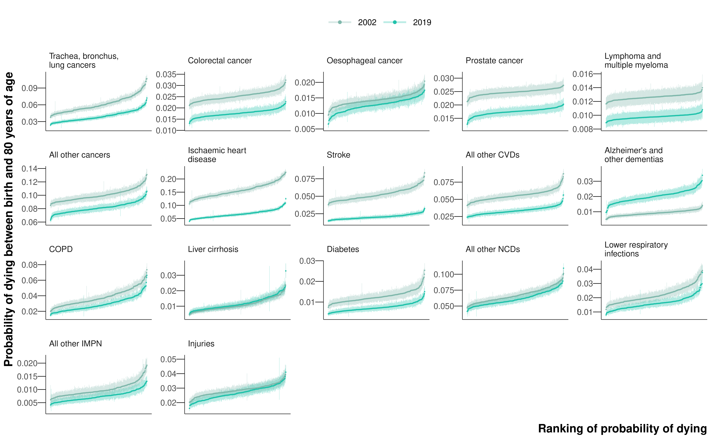
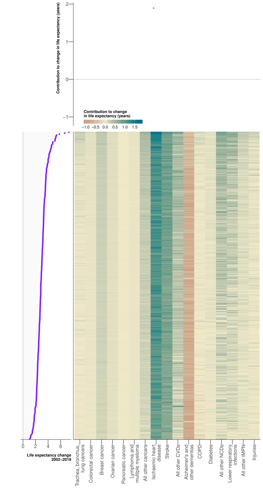
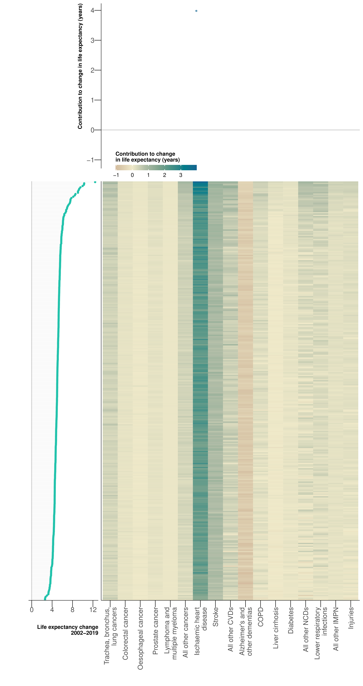

7 Cause-specific mortality at the district level
Where previous studies found female life expectancy in the bottom deciles of deprivation declined (Bennett et al., 2018; Marmot et al., 2020), in Chapter 5, I showed there were widespread and accelerating declines, with 1 in 5 small areas for women and 1 in 9 for men observing a fall in life expectancy in 2014-19. However, the lack of available covariates at the MSOA level makes it difficult to suggest which social and environmental effects are driving life expectancy downwards. By analysing mortality for specific causes of death, which is the second objective of the thesis that I address in this chapter, we are able to suggest pathways that shape mortality profiles.
7.1 Methods
7.1.1 Mortality and population data
I performed a high-resolution spatiotemporal analysis of vital registration data in which I extracted de-identified data for all deaths in England from 2002 to 2019 (8,648,191 death records, extract date: 17\(^{\text{th}}\) November 2022). England was divided into 314 districts according to the boundaries in 2020. Deaths were assigned into the following age groups: 0, 1–4, 5–9, …, 80–84, 85+ years. I did not use 130 death records (<0.001%) for which sex was not recorded. There were no age-district-year combinations in which the number of deaths from all causes exceeded the population.
7.1.2 Grouping causes of death
Each death record in post-neonatal ages was assigned an ICD-10 code corresponding to the underlying cause of death. For neonates, which are not assigned an underlying cause of death, I used the ICD-10 code in the first position on the death record. I used ICD-10 codes to assign each death to 136 cause groups of the WHO Global Health Estimates (GHE) study (World Health Organization, 2020); these groups encompass causes of death with related aetiology and clinical and public health relevance. I also grouped diabetes mellitus and nephritis and nephrosis (hereafter referred to as diabetes) as these deaths might have a similar history. I used the top twelve causes of death for each sex according to the total number of deaths from 2002 to 2019 for cause-specific analysis, as well as a residual groups comprising deaths from all other cancers, all other non-communicable diseases (NCDs), all other cardiovascular diseases (CVDs), all other infections, maternal, perinatal and nutritional conditions (IMPN), and injuries (external causes). Together, these form a mutually exclusive, collectively exhaustive list of causes of death (Figure 7.1).
The full list of ICD-10 codes for each cause group can be found in Table D.1.

There were 4,465,948 (51.6%) deaths in women and 4,182,108 (48.4%) in men in England from 2002 to 2019. 3,972,286 (45.9%) of these deaths occurred in people aged younger than 80 years of age.
Of the wider cause groups (CVDs; NCDs; cancers; maternal, perinatal, nutritional and infectious causes; injuries), CVDs had the largest proportion of deaths at 2,712,895 (31.4%) from 2002 to 2019 (Figure 7.1). NCDs (excluding CVDs and cancers) were responsible for 2,508,844 (29.0%) deaths from 2002 to 2019. Cancers accounted for 28.5% of all deaths, nearly the same total mortality burden as NCDs. There were far fewer deaths from IMPN causes (666,783 (7.7%)) and injuries (295,034 (3.4%)), which are equivalent to GBD Groups 1 and 3, respectively.
7.1.3 Statistical analysis
Although the size of the spatial unit of analysis has been increased to the district-level, by stratifying by cause of death, the number of deaths in each age-district-year-cause stratum is still very small. As outlined Chapter 4, I used a Bayesian hierarchical model to obtain stable estimates of death rates. I conducted all analyses separately by sex and cause group.
Unlike the models in previous chapters, I used a binomial likelihood: \[ \text{deaths}_{ast} \sim \text{Binomial}(m_{ast}, \text{Population}_{ast}). \tag{7.1}\] A beta-binomial was trialled but did not improve model fit. The model is the same as model Chapter 4, but without a random walk for each spatial unit (\(\nu_{st}\)), which was tested but did not improve the fit despite adding a lot of complexity.
Spatial effects were modelled using ICAR priors rather than the nested hierarchy of random effects seen in Chapter 5 and Chapter 6. The nested hierarchy allowed units that fell in different districts to differ more than those within the same district, reflecting the relevance of district as a unit of resource allocation and policy. However, regions, the level above districts in the hierarchy, have no such policy implications and hence we implemented a fully spatial model.
The ICAR model requires all spatial units to have neighbours. Thus, the districts containing the Isle of Wight and the Isles of Scilly were each joined to the nearest mainland district based on road or ferry connections.
All model parameters, their priors and dimensions are in Table B.3.
I fitted the model in the probabilistic programming language NumPyro (Phan et al., 2019) and obtained 1000 draws from the posterior distribution of model parameters that were used to calculate age-specific death rates. Where possible, non-centred parametrisations were used in the model to improve the efficiency of the NUTS samplers. I ran four chains with a warmup of 2000 iterations and then 10,000 further iterations and thinned the remainder by 40 to obtain 1000 post-burn-in draws from the posterior distribution.
The primary reporting outcome is the unconditional probability of dying between birth and 80 years of age. Unconditional probability is the probability of death in the absence of competing causes of death, and is calculated using life table methods from age-specific death rates from the cause of interest (Preston et al., 2001). I limited the age range to 80 years because the probability of death in the absence of competing causes equals 100% when the entire life course is considered. The reported 95% credible intervals represent the 2.5\(^{\text{th}}\) and 97.5\(^{\text{th}}\) percentiles of the posterior distribution of estimated probability of death.
In order to assess the effect of differences in the cause-composition of mortality between districts on inequalities in total mortality, I decomposed life expectancy differences into contributions from specific causes of death. This required estimates of life expectancy at the district level, for which I ran a model for a combined group of all deaths. Death rates for this total mortality group, and for injuries, were corrected in 2017 in Kensington and Chelsea for the Grenfell fire by imputing using the mean deaths from injuries between 2016 and 2018 before running the model.
I calculated the contributions of deaths from each cause of death, in each age group, to both the life expectancy inequality between each district and the district with the highest life expectancy, and to the life expectancy change for each district between different time periods. I used Arriaga’s method, which is widely used to decompose life expectancy differences between populations or population subgroups (Arriaga, 1984). Arriaga’s method calculates how much each age group contributes to the life expectancy difference by quantifying how much death rate differences at that age change the years of life lived both at that age and in subsequent ages through changing the number of survivors. It then partitions the age-specific contributions to the life expectancy gap by cause of death in proportion to the difference in cause-specific death rates between the subgroups. The cause-specific death rates were scaled such that the sum over all causes was equal to the estimate for total mortality. For this analysis, I used the sample mean death rate in each age-district-year-cause combination.
Details on the calculations for life expectancy, the probability of dying, and Arriaga’s method can be found in Appendix A.
7.2 Results
7.2.1 Variation in space
The highest probability of dying between birth and 80 years of age in 2019 for any sex-cause-district combination was for ischaemic heart disease for men in Manchester at 0.13 (0.12-0.13) (Figure 7.2 and Figure E.1). For women, all other NCDs had the highest mortality for any disease, with the highest probability of dying of 0.09 (0.08-0.09) in Blackpool (Figure 7.2 and Figure E.8).

The cause of death with the largest inequality in mortality was COPD for women, with a 6.0-fold variation between the districts with the highest and lowest probabilities of dying in 2019. COPD was also one of the most unequal causes of death for men (4.4-fold), but was exceeded in inequality by lower respiratory infections (4.8-fold) and liver cirrhosis (6.7-fold), which was in the top twelve leading causes of death for men but not for women. For women, there was large inequality in the probability of dying for the two leading causes of death by total number of deaths, Alzheimer’s and other dementias (4.1-fold; referred to as dementias hereafter) and ischaemic heart disease (4.4-fold), although there was less variation in mortality for these causes in men (3.6-fold and 3.1-fold). All of these causes presented similar geographies, with the highest probabilities of dying clustered in urban areas, particularly in the North West (figure in Appendix E).
With the exception of trachea, bronchus and lung cancers (referred to hereafter as lung cancer; 3.7-fold variation for women and 3.1-fold for men), cancers showed the least geographical inequality, all with less than 1.7-fold variation in the probability of dying. For both sexes, the least unequal cause of death was lymphomas, multiple myeloma (1.2-fold for both sexes).
The highest probabilities of dying from diabetes for both sexes were in the east of London (Figure E.6). Specifically, the borough of Newham had the highest mortality for both sexes (0.01 (0.01-0.01) for women and 0.02 (0.01-0.02) for men). The highest mortality for injuries were in coastal areas and in the urban northwest, with the highest probability of dying for men in Blackpool at 0.04 (0.04-0.05) (Figure E.26).
7.2.2 Variation over time
The largest declines from 2002 to 2019 were seen in CVDs (Figure 7.3). The probability of dying between birth and 80 years of age from ischaemic heart disease (median decline across districts of 67.1% for women and 58.2% for men) and strokes (62.7% and 61.3%) declined in all districts for both sexes, and mortality from all other CVDs decreased in all but the districts of Isle of Wight and Hastings (41.9% for women and 40.5% for men; Figure E.3), suggesting there are localised issues in the data. There were also declines in all districts for each sex for diabetes mortality (43.2% and 42.9%).
In contrast, the probability of dying from dementias saw the largest increases of any cause, with all districts observing an increase for both sexes (median increase across districts of 106.2% for women and 121.8% for men; Figure E.4). The largest increases were Eastbourne (419.4% (314.2% to 544.5%)) for women and in Kingston-upon-Hull (235.1% (168.8% to 316.6%)) for men.
Mortality from cancer causes of death declined in all districts and for both sexes with three exceptions: pancreatic cancer mortality, which saw increases in all districts (except a small decrease in Tower Hamlets for women), and lung cancer mortality in women and oesophageal cancer mortality in men, which saw decreases in most districts but increases elsewhere. Mortality from COPD also saw mixed trends, and with wider variability than the observed changes in lung cancer mortality. The probability of dying declined in a larger proportion of districts for men (305 (97.1%)) than for women (215 (68.5%)). The largest increases for both sexes were seen in Kingston upon Hull for (45.9% (24.8% to 67.9%) for women and 20.6% (2.9% to 40.7%) for men).
The change in probability of dying from all other IMPN was greatly different between the sexes, with 71 (22.6%) districts seeing an increase for women, the largest in Barrow-in-Furness (55.6% (-0.8% to 135.2%)), compared to only 5 (0.02%) districts for men. There were also mixed trends for lower respiratory infections (increases in 13 (4.1%) districts for women and 9 (2.9%) for men), all other NCDs (29 (9.2%) and 53 (16.9%)), and injuries (116 (36.9%) and 9 (2.9%)).
Mortality from liver cirrhosis presented dramatic spatial variation in change in mortality over the period 2002-19, with a contrast between huge decreases in districts in London and increases in the majority (243 (77.4%) districts) of districts elsewhere in the country, with the largest increases in the coastal South West and East of England (Figure E.7).
7.2.3 Contribution to life expectancy inequality
The district with the highest life expectancy for both sexes in 2019 was the City of London, a small and affluent district in the capital, at 90.1 years for women and 87.4 years1 for men. For women, the district with the lowest life expectancy was Manchester, which was 10.1 years lower than the best-performing district. Blackpool had the lowest life expectancy for men, 13.0 years less than the City of London.


The major contributing cause to inequality with respect to the best-performing district was dementias for women, which was the leading contributor for 254 (80.9%) districts. For men, the all other NCDs group was the leading cause in 220 (70.0%) districts. From the groups of cancers, lung cancer and all other cancers presented clear gradients, with the largest contributions in the worst-performing districts (Figure 7.4). Specifically, lung cancer had a difference in contribution between the 10\(^{\text{th}}\) and 90\(^{\text{th}}\) percentile districts of 0.6 years for women and 0.5 years for men, and all other cancers was 0.5 years for both sexes. There were strong gradients from the best- to worst-performing districts for all other NCDs (10\(^{\text{th}}\)-90\(^{\text{th}}\) percentile differences of 0.9 years for women and 0.8 years for men), ischaemic heart disease (0.5 years and 0.8 years), and COPD (0.6 years and 0.5 years). Contributions to inequality from dementias were not as obviously directional, but the cause group had large 10\(^{\text{th}}\)-90\(^{\text{th}}\) percentile differences of 0.8 years for women and 0.5 years for men. There was a more prominent gradient for injuries in men (0.5 years) than women (0.3 years).
7.2.4 Contribution to life expectancy change
From 2002 to 2019, life expectancy increased in every district for both women and men (Figure 7.5). This was driven largely by decreases in ischaemic heart disease mortality, which contributed gains of between 0.7 and 1.9 years for women between 1.4 and 4.0 years for men. In contrast, mortality from dementias acted in the other direction, forcing life expectancy downwards by between 0.2 and 1.1 years for women and between 0.4 and 1.0 years for women.


In Figure 7.6 and Figure 7.7, I break the overall trend down into two time periods around the year 2010. This both follows the analysis for Figure 5.8, but it is also the year there was a change in government, and a move in fiscal policy towards austerity.
In the period 2010-19, life expectancy progress slowed in England, as discussed at the MSOA level in Chapter 5, with three districts experiencing a decline in female life expectancy. For women, lung cancer switched from generally contributing negatively to the change in district life expectancy (Figure 7.6 (a)) to positively (Figure 7.6 (b)). The contribution for the other cancer groups was similar for the two time periods. There were a larger number of districts with positive contributions for all other NCDs in the second period. The positive contribution from all the CVD groups (ischaemic heart disease, stroke, all other CVDs) was weaker for the second time period as the negative forcing effect of dementias strengthened massively. In the years 2010 to 2019, the inequality in progress between districts was driven largely by dementias and all other NCDs, both with a difference in contribution between the 10\(^{\text{th}}\) and 90\(^{\text{th}}\) percentile districts of 3.0 years.
For men, the contribution for all cancers groups, including lung cancer, maintained the same picture in each time period. As for women, the slowdown in progress was driven by reductions in the contribution from CVDs in the second time period and the strong negative contributions from dementias. Injuries, which contributed positively to life expectancy increases in 2002-10 for all districts, saw a reversal with all but 19 districts contributing negatively. In the latter period, mortality from ischaemic heart disease, dementias, and all other NCDs were driving the inequality in progress between districts, with differences in contribution between the 10\(^{\text{th}}\) and 90\(^{\text{th}}\) percentile districts of 2.8, 2.9 and 3.0 years respectively.


7.3 Discussion
This analysis revealed huge inequalities in mortality for a wide-ranging variety of causes of death in England. In particular, although there were widespread declines in CVDs, there have been huge increases in dementias, which in 2019 became one of the most unequal causes of death, with 4.1- and 3.6-fold differences for women and men between the highest and lowest districts. I found that the slowdown in life expectancy gains since around 2010 has been driven largely by dementias and all other NCDs in women, and by ischaemic heart disease, dementias, and all other NCDs in men.
7.3.1 Strengths and limitations
The work presents trends in cause-specific mortality over a period of substantial policy interest at the district level, and uncovers which causes of death have been driving the slowdown in progress since 2010.
The study was carried out at the district level rather than for MSOAs, which masks substantial heterogeneity, as shown by the all-cause mortality study in Chapter 5. However, when stratifying further by cause of death, the number of deaths in each age-space-time-cause stratum can be extremely small, even at the district level, which makes the estimation task difficult. Furthermore, running a model that takes a day of GPU time to reach convergence for all causes at the MSOA level for 34 cause-sex combinations is extremely computationally demanding.
This study did not look at age- and cause-specific contributions to life expectancy inequality, unlike Bennett et al. (2018), and instead collapsed over age groups. Although this masks some variation, the groups were selected based on the total number of deaths from 2002 to 2019, and are consequently skewed towards older ages, and the age-specific contributions of (e.g.) dementias are not particularly interesting.
Death records are subject to issues in the assignment of ICD-10 codes for the cause of death. Although the ONS use selection algorithms to improve consistency between doctors when identifying the underlying cause of death (Office for National Statistics, 2022), the challenge of multimorbidity in older age groups makes the assignment of cause of death increasingly difficult (Meslé and Vallin, 2021). We selected 80 years of age as the upper bound to partially mitigate this effect because it covers a wide age range but does not include the very oldest ages. However, for certain diseases such as dementias where only 96,109 (14.5% of 663,692) of deaths from occur in those under 80 years, the probability of dying between birth and 80 years masks variations in the age groups where the majority of deaths occur. There are also specific cases of problematic cause of death assignment in the data. For example, mortality from all other CVDs showed a downward trend in every district with the exceptions of Hastings and, more noticeably, the Isle of Wight. Looking at the raw data for these districts, there is a step increase in the use of ICD-10 code I51.5 – a garbage CVD code (Murray and Lopez, 1996) – since around 2012 in these districts, suggesting these trends result from poor coding practice.
There is always the desire to split the residual groups into more and more causes of death. For example, there are interesting patterns in the change of all other IMPN, and it would be interesting to understand further how the component causes of all other NCDs are driving the inequality in progress. Moreover, there has been a lot of recent attention in the literature on “deaths of despair” – deaths from drug overdose, suicide or alcoholic liver disease – in the UK (Angus et al., 2023) and the US (Case and Deaton, 2015), and it would of interest to separate injuries by whether the deaths were intentional or unintentional. However, the groupings were chosen based on a total mortality rule so that the number of deaths in each cause group allowed robust inference of cause-age-area-year-specific death rates at the district level.
It would have been desirable, albeit computationally challenging, to run all cause groups in a single joint model. When calculating contributions using Arriaga’s method, mortality for each cause group was scaled such that the sum across all causes equalled to the estimate for total mortality. A joint model of cause-specific mortality could account for correlations for diseases with common risk factors and anti-correlations for competing causes of death. Foreman et al. (2017) jointly forecasted cause-specific death rates for states in the US, but instead estimated each age group separately.
The population in each district can change because of migration, both within the country and from overseas. However, unlike Chapter 5 and Chapter 6, migration was not as much of an issue at the district level compared with the smaller levels of analyses used earlier in the thesis. The majority of moves in the UK are within the same district (van Dijk et al., 2021), and so will have little effect on the change in mortality in a given district.
7.3.2 Comparison with previous literature
The general trends of decreasing mortality from CVDs and large increases in dementias are consistent with studies on mortality in deciles of deprivation at the national level in England (Bennett et al., 2018). Despite increases in the rates of diabetes over the past decades (NHS Digital, 2023), the observation that mortality from diabetes decreased in every district for both sexes is also consistent with trends at the national level and reflects a diversification of causes of death in individuals with diagnosed diabetes (Pearson-Stuttard et al., 2021).
There are two key studies in the literature which break the population of England down into subgroups and look at the cause-composition of mortality: Firstly, from my research group, Bennett et al. (2018) divided the population by deciles of deprivation and looked at largely similar groups of causes to this chapter. The authors found the gap in life expectancy between the most and least deprived areas was caused by the large contributions of respiratory diseases, ischaemic heart disease, and a set of preventable and treatable cancers. Unlike the present work, the authors broke the results down further by age, finding that deaths in children younger than 5 years and dementias in older ages drove the inequality between the top and bottom deciles.
Secondly, using data from one of the first GBD studies of subnational populations, Steel et al. (2018) looked at trends in mortality of 150 upper tier local authorities, which are larger than the districts used in this chapter, but considered a massive 264 causes of death, relying heavily on covariates in the model to produce estimates for areas with little to no data on more obscure causes. As with Bennett et al. (2018) and the work here, the GBD group found the rate of improvement in life expectancy had slowed since 2010. They found, in general, the slowdown was driven by the disappearance of sustained annual improvements from ischaemic heart disease, strokes, as in the present results, but also to a lesser extent from colorectal cancer, lung cancer, and breast cancer. The authors found the annual reduction in mortality attributable to most major risk factors (tobacco, dietary risks, high blood pressure etc) had declined since 1990, but has slowed since 2010, with the exception of alcohol and drug use, which has seen little change since the 2000s.
Both these studies focus on what causes of death have driven the inequality between subgroups of the population. I found the causes with the clearest gradients in contribution from the best- to worst-performing districts were those with modifiable risk factors, such as ischaemic heart disease, lung cancer, COPD, and injuries, and also the residual groups of all other NCDs and all other cancers. There were also contributions from dementias, but these did not follow the direction from best- to worst-performing district as obviously as the aforementioned causes. The work in this chapter extends previous studies by also considering which causes of death have driven the the inequality in progress between subgroups of the population.
7.3.3 Explaining the variation
Asaria et al. (2012) found CVD mortality followed a persistent downward trend in nearly all wards in England from 1982 to 2006. Both mortality from ischaemic heart disease and strokes have continued to follow this trend through to 2019 at the district level.
In England, about 51% of all mortality from myocardial infarction, an acute manifestation of ischaemic heart disease, is attributable to out-of-hospital deaths (Asaria et al., 2017). Reductions in out-of-hospital mortality reflects improvements in reducing and controlling risk factors for CVD (smoking, blood glucose and diabetes, raised blood pressure, and high blood cholesterol) (Ezzati et al., 2015). Unlike cancers and COPD where the increased risk following smoking spans decades, the risk of CVD returns to the level of non-smokers within ten years after smoking cessation (Ezzati et al., 2015). Declines in CVD mortality have thus gained greatly from reductions in smoking rates, and more recently, the ban on smoking in public places, which came into force in the UK in 2007 and has had a rapid effect on hospitalisation rates for acute CVD cases (Pell et al., 2008). As well as improvements in these risk factors, reductions in in-hospital CVD mortality partially reflect organisational changes to the NHS such that patients with acute myocardial infarctions are taken directly to centres with capacity to re-open arteries, bypassing local accident and emergency services. Furthermore, strategies to shorten pre-hospital delays between symptom onset and a call for help, for example, the FAST (Face drooping, Arm weakness, Speech difficulties, Time) public health campaign for stroke events, can improve the efficacy of treatments such as stent insertions.
The burden of mortality has shifted towards dementias. A number of the main risk factors for dementias are the same as for CVDs (smoking, obesity, diabetes, high blood pressure, high cholesterol) (Yu et al., 2020). However dementia diagnoses are also heavily influenced by age, family history and education. Some part of this trend may also be due to increased efforts in improving diagnosis and cause of death coding of dementias in the UK (Hayat et al., 2022; Mukadam et al., 2014).
These contrasting trends in mortality from ischaemic heart disease and dementias could explain the finding that these causes of death have largely driven the heterogeneity of the slowdown in life expectancy gains since around 2010 at varying rates across districts, suggesting that heterogeneous dynamics of CVD risk factors within the population have influenced the inequality in progress in recent years. The sizeable contribution to the inequality in life expectancy improvement from all other NCDs is more difficult to explain without further stratifying the cause group.
The heterogeneous trends in mortality from both lung cancer, where the probability of dying declined in all districts for men and saw mixed trends for women, and from COPD, where a larger proportion of districts experienced a decrease in mortality for women than for men, reflected that the peak in female smoking rates and smoking-attributable mortality have lagged behind that in men by about 20-30 years (Thun et al., 2012).
The geography of the change in mortality from liver cirrhosis – an advanced stage of liver damage – is perhaps indicative of the contrasting dynamics of the two main risk factors for liver cirrhosis: alcohol misuse and hepatitis B/C infection. Alcohol is the main cause of liver disease, and has driven a large proportion of increases in liver cirrhosis throughout Europe (Blachier et al., 2013). Alcohol is generally consumed less in the capital, with London having the lowest percentage of adults who abstain from drinking alcohol (23.6%) and the lowest percentage of adults who drink over 14 units per week (20.1%) (Public Health England, 2021). On the other hand, the prevalence of hepatitis B/C has decreased over the past decades. There has been reduced incidence and vaccination for hepatitis B. Although a large number of people acquired hepatitis C in the 1970s and 1980s, the virus has since been identified and transmission has reduced (Blachier et al., 2013).
As is the case in most high income countries, which are in the third stage of the epidemiologic transition, there were far fewer deaths from maternal, perinatal, nutritional and infectious causes (GBD Group 1) and injuries (GBD Group 3) compared to CVDs, cancers and other NCDs (GBD Group 2). Although notably, these results consider the period before the Covid-19 pandemic, so the cause-composition will likely have changed to include more deaths from infections in the most recent years. The similar profiles for men and women for the level of mortality from all other IMPN in 2019 reflects that the three main causes by number of deaths are other infectious diseases, diarrhoeal diseases, low birth weight rather than maternal conditions, although without further disaggregating this group, it is difficult to suggest drivers of the observed trends. Mortality from lower respiratory infections, which include influenza and pneumonia, can vary greatly between years depending on the severity of the virus and whether the flu vaccination prevents the prevalent strain. It also depends on the strength of the immune system of the infected. The ability of the lungs to recover from infection can be degraded by years of industrial exposure or smoking, which could influence the high mortality in the urban North West. The highest mortality from injuries were in coastal areas, where there are obvious natural hazards, but also include a number of “left-behind” districts following deindustrialisation and lack of investment (Whitty, 2021). The highest male mortality from injuries was in Blackpool, which agrees with both the literature on mortality from drugs and suicide (Congdon, 2019) and coincides with the MSOA level life expectancy results (Chapter 5).
7.4 Summary
I performed a high-resolution spatiotemporal analysis of vital registration data on deaths from the twelve leading causes of death by sex in England from 2002 to 2019. I used life table methods to calculate the probability of dying between birth and 80 years of age by sex, cause of death, district and year, as well as the cause-specific contributions to the inequality in life expectancy between different years of the study for each district.
The most unequal causes of death were COPD for women (6.0-fold variation in mortality across districts) and liver cirrhosis for men (6.7-fold). The causes of death with the least geographical variability were lymphomas, multiple myeloma (1.2-fold for both sexes) and leukaemia (1.1-fold for women and 1.2-fold for men). There has been a slowdown in life expectancy gains since 2010, which has been driven largely by dementias and all other NCDs in women, and by ischaemic heart disease, dementias, and all other NCDs in men.
For the analyses on the contributions of different causes of death to life expectancy differences, I do not state uncertainty because I use the mean of the death rate samples. This is so the contributions from Arriaga’s method sum exactly to the life expectancy difference. Hence, values of life expectancy differences and the cause-district-specific contributions towards these differences are mean estimates without uncertainty.↩︎